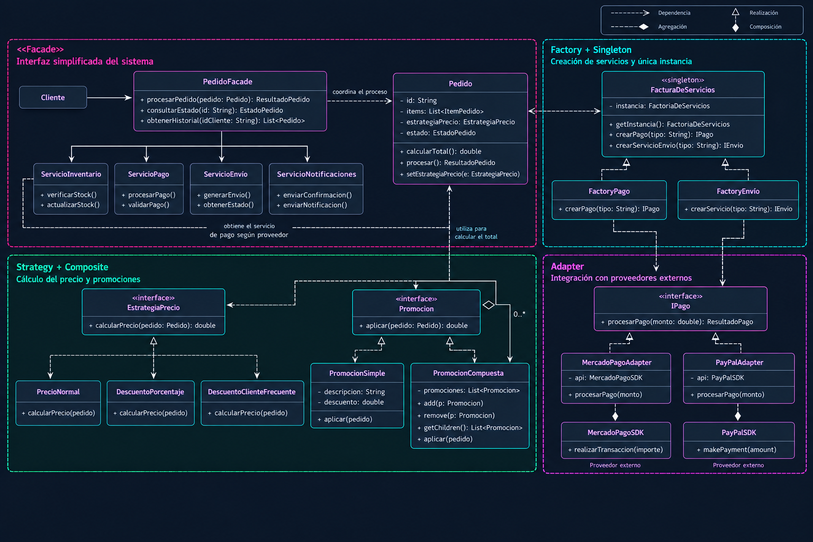

Patrones de Diseño GoF
Evolución de un Sistema de Gestión de Pedidos
Acceso QR 1
Fichas técnicas ejecutivas de los seis patrones GoF
Acceso QR 2
Soporte visual navegable proyectado en la exposición
¿Qué es un Patrón de Diseño GoF?
Una solución general y reutilizable a un problema recurrente. No es código pegado: es un concepto estructural de alto nivel de abstracción.
Creacionales
¿Cómo se crean los objetos sin acoplar la aplicación?
• Factory (Factoría)
• Singleton (Instancia Única)
Estructurales
¿Cómo se organizan y relacionan clases y objetos?
• Adapter (Adaptador)
• Facade (Fachada)
• Composite (Objeto Compuesto)
Comportamiento
¿Cómo colaboran e intercambian responsabilidades?
• Strategy (Estrategia)
Sistema Inicial de Gestión de Pedidos
Estructura directa antes de la aparición de nuevos requerimientos complejos.
INTEGRAR
Queremos procesar pagos con múltiples proveedores externos, pero cada uno ofrece una interfaz completamente diferente e incompatible.
Proveedor A: procesarPago(monto)
Proveedor B: realizarTransaccion(importe)
Proveedor C: pagar(total)
Adapter: Teoría & Estructura General
¿Cómo resolver interfaces incompatibles, o proporcionar una interfaz estable para componentes parecidos con diferentes interfaces?
Convertir la interfaz original de un componente en otra interfaz mediante un objeto adaptador intermedio.
• Client: Solicita la operación
• Target: Interfaz esperada
• Adapter: Traduce las llamadas
• Adaptee: Objeto existente incompatible
Target + request()
Adapter: Integración con Proveedores de Pago
El sistema trabaja con una interfaz estable. Se ocultan diferencias externas y se incorporan proveedores sin modificar el cliente.
Suma una capa de indirección y clases adicionales en el sistema.
Tenemos los Adapters... ¿pero quién es responsable de instanciarlos?
CREAR
Si cada parte del sistema crea directamente los objetos concretos, la lógica de instanciación termina dispersa por todo el código.
new PagoProveedorA()
new PagoProveedorB()
new PagoProveedorC()
La creación empieza a estar repartida por el sistema.
Factory: Teoría & Estructura General
¿Quién debe ser responsable de la creación de los objetos cuando existen consideraciones especiales o una lógica de creación que conviene separar?
Crear un objeto de Fabricación Pura (Factoría) que concentre la responsabilidad de instanciación.
• Client: Solicita el producto
• Factory: Encargada de fabricar
• Product: Interfaz del objeto
• ConcreteProduct: Implementaciones
Product + doStuff()
Factory: Encapsulamiento de Creación de Servicios
+ crearPago(tipo): IPago
+ crearServicioEnvio(tipo): IEnvio
Aísla la lógica de creación. El cliente no necesita conocer las clases concretas instanciadas.
Suma una clase adicional y una indirección más al flujo.
La Factoría es utilizada desde múltiples módulos... ¿necesitamos varias instancias de ella?
CONTROLAR
Garantizar que exista una única instancia compartida de la FactoríaDeServicios en todo el ciclo de vida del sistema.
Singleton: Teoría & Estructura General
¿Cómo garantizar que exista una única instancia de una clase y proporcionar un punto de acceso a ella?
La propia clase controla su única instancia y proporciona un punto de acceso global mediante un método estático.
• Singleton: Controla su instancia
• Client: Solicita getInstance()
- instance: Singleton
- Singleton() [privado]
+ getInstance(): Singleton
Singleton: Instancia Única de la Factoría
- instancia: FactoriaDeServicios
- FactoriaDeServicios() [Privado]
+ getInstancia(): FactoriaDeServicios
+ crearPago(tipo): IPago
Garantiza una única instancia compartida y control estricto de acceso global.
Introduce una dependencia global que puede dificultar pruebas unitarias independientes.
Ya controlamos la creación de la Factoría, pero el cliente todavía necesita conocer y coordinar varios servicios del sistema.
SIMPLIFICAR
Ocultar la complejidad de coordinar Inventario, Pago, Envío y Notificaciones detrás de un único punto de entrada simplificado.
Facade: Teoría & Estructura General
¿Cómo proporcionar una interfaz común y unificada para un conjunto de implementaciones o interfaces dispares, como puede ocurrir dentro de un subsistema?
Una Fachada proporciona un único punto de acceso simplificado al subsistema coordinando las operaciones internas.
• Client: Llama a la Fachada
• Facade: Coordina el subsistema
• Subsystem classes: Componentes ocultos
Facade: Proceso Unificado del Pedido
Oculta la complejidad, reduce dependencias directas y protege al cliente frente a cambios internos.
Riesgo de que la Fachada se convierta en una clase demasiado grande.
Ahora tenemos un único punto de acceso, pero el cálculo del importe puede variar según la política que necesitemos aplicar.
VARIAR
Intercambiar algoritmos de cálculo de precio (Normal, Descuento, Cliente Frecuente) sin saturar la clase Pedido con condicionales.
Strategy: Teoría & Estructura General
¿Cómo diseñar diversos algoritmos o políticas que están relacionadas? ¿Cómo diseñar que estos algoritmos o políticas puedan cambiar?
Encapsular cada algoritmo o política en una estrategia independiente bajo una interfaz común.
• Context: Delega el cálculo
• Strategy: Interfaz común
• ConcreteStrategy: Algoritmo concreto
- strategy: Strategy
+ setStrategy(s)
+ doSomething()
Strategy: Cálculo Intercambiable de Precio
- estrategia: EstrategiaPrecio
+ setEstrategia(e)
+ calcularTotal(): double
Permite cambiar la política de precio en tiempo de ejecución sin alterar la clase Pedido.
Incrementa las clases y exige seleccionar y configurar la estrategia desde el cliente.
Podemos cambiar la estrategia, pero algunas promociones necesitan combinar varias reglas de manera conjunta.
COMPONER
Tratar promociones simples (20% Off) y promociones compuestas (Black Friday = 20% + Envío Gratis) de manera uniforme polimórfica.
Composite: Teoría & Estructura General
¿Cómo tratar un grupo o una estructura compuesta del mismo modo (polimórficamente) que un objeto no compuesto (atómico)?
Utilizar una interfaz común para objetos individuales (Leaf) y objetos compuestos (Composite).
• Component: Interfaz común
• Leaf: Objeto individual
• Composite: Contiene colección de Component
- children: List<Component>
+ add(c: Component)
+ remove(c: Component)
+ execute()
Composite: Promociones Simples y Compuestas
- descripcion: String
- descuento: double
+ aplicar(pedido): double
- hijas: List<Promocion>
+ add(p: Promocion)
+ remove(p: Promocion)
+ getChildren(): List<Promocion>
+ aplicar(pedido): double
Tratamiento uniforme de promociones atómicas y grupos de promociones. Se integra perfectamente con Strategy.
La interfaz común puede resultar demasiado general para componentes específicos.
Ya podemos combinar promociones individuales y compuestas. Ahora veamos cómo quedan integrados los seis patrones en el diseño final.
Integración de los 6 Patrones GoF en el Sistema

Los Patrones como Vocabulario de Diseño
Un patrón de diseño no se elige por simple estética. Surge cuando el problema de software exige una decisión de arquitectura estructurada y reutilizable.
¡Muchas gracias por su atención!
Espacio abierto para preguntas de la mesa evaluadora y debate.